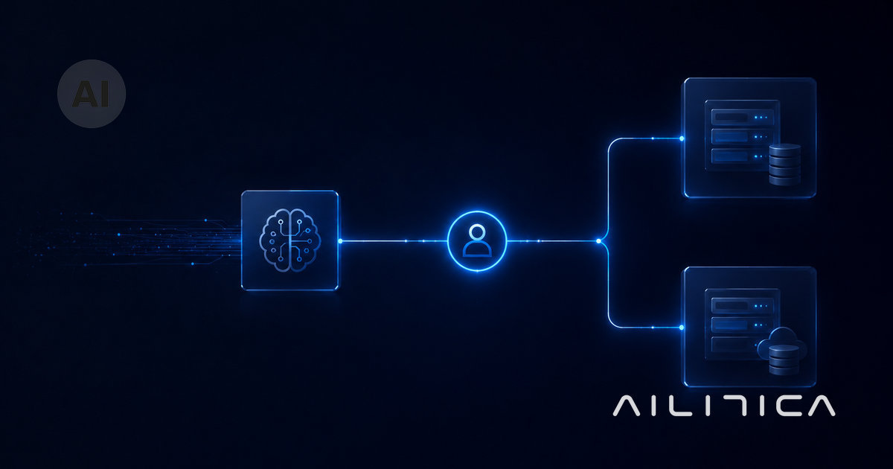

Blog
Ideas que conectan personas y agentes.
Guías prácticas sobre agentes de IA, automatización, normativa y control. Escritas para quien decide, no para quien programa.
Ver la página de Fundamentos → Ver la página de Automatización y procesos → Ver la página de Gobernanza y control → Ver la página de Normativa IA → Ver la página de Estrategia y decisión →

¿Necesitas un responsable de IA (Chief AI Officer) en tu empresa?
Ni la ley europea ni la española exigen un Chief AI Officer, pero sí que la decisión de quién responde por la IA esté por escrito. Quién debería asumir el rol en una empresa pequeña.
Leer artículoQué pasa con tus datos si tu equipo usa ChatGPT sin autorización
Un análisis de Cyberhaven sobre más de 3 millones de trabajadores: el 82,8% de los documentos legales sensibles pegados en IA acaban en cuentas personales sin control. El caso Samsung, explicado.
Leer artículo
Cómo saber qué IA está usando tu equipo, antes de escribir una política
Tres sitios donde mirar antes de redactar ninguna política de IA: tarjeta de empresa, extensiones del navegador y registros de acceso SSO/OAuth.
Leer artículo¿Es legal usar ChatGPT (o cualquier IA) con datos de tus clientes?
La regla del email a un desconocido: qué no pegar nunca en una IA de consumo, qué revisar del proveedor antes de activarla y cuándo consultar a tu asesor legal.
Leer artículoQué documentos aguanta un agente de IA, y en cuáles se equivoca
Un agente de IA lee bien facturas y contratos con formato fijo, pero se rompe con manuscritos, escaneos borrosos y cláusulas ambiguas. La taxonomía real: leer, clasificar, extraer, validar.
Leer artículo
Cuándo necesitas varios agentes de IA y no uno solo: arquitectura multiagente para empresas
Cuándo basta un agente de IA y cuándo hace falta una célula coordinada por un orquestador. El criterio de decisión que separa un sistema en producción de una demo bonita.
Leer artículo
Tu empresa usa IA de terceros: qué te obliga el AI Act como «deployer» (y qué no)
El mito «no fabrico IA, no me aplica» es la confusión más cara del mercado. Como empresa usuaria eres «deployer» y el AI Act sí te obliga. Qué te toca hacer hoy, en llano.
Leer artículo
Integrar un agente de IA en los sistemas que ya tienes (sin reventar tu stack)
La inteligencia no es el problema; el acceso seguro a tus sistemas sí. Qué se conecta, qué se valida antes de tocar producción y dónde manda el humano.
Leer artículo
Cómo evaluar si un agente de IA funciona de verdad antes de dejarle decidir
Que un agente responda no significa que acierte. Cómo medir la tasa de acierto con un banco de casos, qué probar antes de producción y cómo vigilar la deriva después.
Leer artículo
Cómo montar un agente de IA en tu ChatGPT
Seguramente ya tienes un agente de IA a medias en tu ChatGPT. Sus tres piezas (cerebro, habilidades y herramientas) y 3 escalones: del truco al agente real.
Leer artículo
Calendario AI Act 2027: el reloj real tras el Digital Omnibus
El alto riesgo del AI Act se aplaza a diciembre de 2027 y agosto de 2028. El calendario que ya se da por firme tras el Digital Omnibus y las 3 obligaciones que tu empresa cumple ya.
Leer artículo
El 88% de los pilotos de agentes de IA no llega a producción: por qué, y cómo estar en el 12%
El 88% de los pilotos de agentes de IA no llega a producción (IDC, 2025). No es la IA: es el diseño. Las causas reales y cómo estar en el 12%.
Leer artículo
España ya tiene su ley de IA: AESIA, multas de hasta 35 millones y qué te toca a ti
España aprobó el 26 de mayo de 2026 su proyecto de ley de IA: AESIA como autoridad central y multas de hasta 35 M€ o el 7%. Qué te toca como empresa, uses IA propia o de terceros.
Leer artículoAgentes de IA que nadie autorizó: el problema del 'shadow AI' que ya está en tu empresa
El 82% de las empresas tiene agentes de IA que nadie dio de alta (CSA, abril 2026). Qué es el shadow AI, qué riesgo real implica y cómo controlarlo en una pyme con tres pasos proporcionados.
Leer artículoSeis meses publicando sobre agentes de IA: lo que de verdad hemos aprendido (y rectificado)
Llevamos seis meses escribiendo sobre agentes de IA. Unas cosas las clavamos, otras las hemos rectificado a la luz de la realidad de las empresas. Esto es lo que ha cambiado nuestra forma de proponer.
Leer artículo
España lidera la adopción de IA en Europa, pero no la ejecuta
El 41 % de las pymes españolas ya usa IA a diario y España es séptima del mundo en adopción. Pero el retorno no aparece. Por qué adoptar no es ejecutar, y cómo cruzar esa brecha.
Leer artículo
Vibe coding y seguridad: el 91% del código de IA arrastra fallos reales
El 91,5% de las apps creadas con vibe coding tienen al menos un fallo de seguridad. Qué significa para tu pyme y cómo el criterio humano lo cambia todo.
Leer artículoQué es el AI Act de la Unión Europea y qué obliga de verdad a tu empresa
Qué es el AI Act de la Unión Europea, a quién aplica y qué obliga de verdad a una pyme: una guía clara por niveles de riesgo, sin jerga legal.
Leer artículo
Automatizar atención al cliente con IA: las tres etapas que marcan el éxito (o el fracaso)
Automatizar la atención al cliente con IA no es enchufar un chatbot. Son tres etapas que dependen de quién, qué y cuándo se escala al humano. Por qué la mitad de las implantaciones se queda a medio camino.
Leer artículoAI Act: lo que NO se aplazó y sigue obligatorio el 2 de agosto de 2026
El aplazamiento del AI Act a diciembre de 2027 solo afecta al alto riesgo. Transparencia, formación y prácticas prohibidas siguen vigentes el 2 de agosto de 2026. Lo que tu pyme debe tener listo ya.
Leer artículoGobernanza de IA en una empresa pequeña: la versión de 2 páginas que sí funciona
La gobernanza de IA en una empresa pequeña no es un manual de 80 páginas: son 7 decisiones y dos firmas en una hoja. Te damos la plantilla de 2 páginas.
Leer artículo
7 señales de que tu agente de IA está fuera de control
Las 7 señales de que un agente de IA está fuera de control que cualquier responsable de negocio detecta en menos de 5 minutos, sin abrir un solo log.
Leer artículo
Human in the loop: cuándo merece la pena (y cuándo es un seguro caro)
No todo proceso de IA necesita un humano vigilando cada paso. Cuándo aplicar human in the loop en tu empresa: validar, auditar o avisar, con una matriz lista para usar.
Leer artículo
Productividad invisible: por qué la IA no se nota (aún) en tu cuenta de resultados
Tu empresa lleva meses usando IA y la productividad no sube en los KPIs. No es que la IA no funcione: es que el ahorro se evapora antes de llegar a la cuenta de resultados. Te explicamos por qué y cómo medirlo de verdad.
Leer artículo
Cómo medir el ROI de un agente de IA en tu empresa (sin spreadsheets imposibles)
El ROI de un agente de IA no se mide solo en horas ahorradas. Tres palancas que multiplican el retorno real por dos, en una sola página y sin spreadsheets imposibles.
Leer artículo
Tu agente de IA no es un empleado junior (y por qué tratarlo así te sale caro)
Comparar un agente de IA con un becario es la analogía más fácil y la más cara. Un junior aprende; un agente ejecuta. Por qué tratarlos igual sale caro.
Leer artículo
Agente vertical vs chatbot horizontal: qué eligen las grandes en 2026
Las empresas que están ganando con IA en 2026 no usan un chatbot que sirve para todo. Usan agentes verticales con dominio específico. Harvey, Rogo, Markups.ai. La hallucination de Rogo bajó del 34,1% al 3,9% al especializarlo.
Leer artículo
Cómo auditar lo que tu agente de IA decide cada día (sin doctorado en IT)
Si no sabes lo que tu agente de IA hizo ayer, no tienes un agente, tienes una caja negra. Tres preguntas que un directivo no técnico puede responder cada mañana en menos de 30 minutos, con plantilla operativa.
Leer artículo
Cómo controlar un agente de IA en tu empresa: 3 mecanismos prácticos
Controlar un agente de IA en una pyme no es comprar una plataforma de gobernanza. Son tres decisiones de diseño: aprobación humana en pasos críticos, sandbox por defecto con whitelist explícita y registro estructurado mínimo accionable.
Leer artículo
AI Act: Bruselas aplaza el deadline de agosto 2026, ¿qué pasa ahora con tu pyme?
La UE acordó el 7 de mayo de 2026 aplazar las obligaciones del AI Act para sistemas de IA de alto riesgo del 2 de agosto de 2026 al 2 de diciembre de 2027. Esto es lo que cambia para tu pyme y lo que sigue siendo exigible hoy.
Leer artículo
IA sin supervisión: lo que el caso PocketOS dice de tu empresa
Un agente de IA borró la base de datos de producción y todas las copias de seguridad de PocketOS en nueve segundos. No fue un fallo técnico: fue un fallo de diseño. Esto es lo que dice de cómo NO hay que desplegar IA en tu empresa.
Leer artículoAgentes de IA para pymes: qué pueden hacer y por dónde empezar
Los agentes de IA no son solo para grandes empresas. Te explicamos qué pueden hacer por una pyme y cómo dar el primer paso sin complicaciones.
Leer artículo
Cuándo NO usar IA en tu empresa: 6 señales claras
El proveedor que te diga que la inteligencia artificial puede hacerlo todo, está vendiendo, no ayudando. Estas son las 6 señales que te dicen que tu caso no es para IA.
Leer artículoIA con criterio humano: por qué el agente decide mejor cuando no decide solo
Los proyectos de IA que funcionan en empresas serias dejan al humano la decisión que importa. Te explicamos cómo se diseña una IA con criterio humano y por qué este enfoque evita los errores más caros.
Leer artículo
Cuánto cuesta automatizar con IA en una empresa (rangos reales, sin humo)
La pregunta sobre el coste de automatizar con IA tiene una respuesta seria, aunque incómoda: depende. Pero depende de tres variables concretas que puedes evaluar antes de pedir un solo presupuesto.
Leer artículoCómo implementar IA en una empresa: el diagnóstico que lo cambia todo
Antes de elegir cualquier herramienta de IA, hay una pregunta que importa más. Un caso real muestra por qué el diagnóstico decide cómo implementar IA en una empresa.
Leer artículoQué procesos automatizar primero con IA: los tres candidatos más frecuentes
La pregunta que más recibimos no es qué puede hacer la IA, sino por cuál proceso empezar. Describimos los tres candidatos que aparecen en casi todos los primeros proyectos que funcionan.
Leer artículo
Inteligencia artificial para directivos: lo que necesitas saber sin ser técnico
No necesitas entender cómo funciona la IA por dentro para tomar buenas decisiones sobre ella en tu empresa. Te explicamos qué puede hacer, qué no puede hacer y qué tienes que preguntarte antes de empezar.
Leer artículoEstrategia de IA para tu empresa: cómo diseñar un plan que funcione de verdad
La mayoría de estrategias de IA fracasan porque empiezan por la tecnología. Te explicamos cómo diseñar un plan de IA con sentido: diagnóstico, arquitectura, despliegue y crecimiento.
Leer artículoAutomatización con IA vs RPA: qué necesita tu empresa realmente
RPA automatiza pasos fijos. La IA entiende contexto y gestiona variabilidad. Te explicamos cuándo usar cada enfoque y cómo combinarlos con sentido.
Leer artículoCómo empezar con IA en tu empresa (guía para quien no sabe por dónde)
No necesitas ser técnico para dar el primer paso con IA. Te explicamos cómo identificar por dónde empezar y qué evitar en el camino.
Leer artículo
Chatbot vs agente de IA: la diferencia que cambia lo que puede hacer tu empresa
No es lo mismo un chatbot que un agente de IA. Te explicamos la diferencia y por qué importa a la hora de decidir qué necesita tu empresa.
Leer artículo
Cómo elegir un proveedor de IA (sin depender de demos bonitas)
El mercado de IA está lleno de ruido. Te damos las preguntas clave para distinguir un buen proveedor de uno que solo hace demos bonitas.
Leer artículoAutomatización de procesos empresariales: qué es y por dónde empezar
Automatizar procesos empresariales libera a tu equipo de tareas repetitivas. Te explicamos qué es, cómo identificar qué automatizar primero y qué papel juega la IA.
Leer artículoQué es un agente de IA (y qué puede hacer por tu empresa)
Un agente de IA no es un chatbot. Es un sistema que percibe, decide y actúa de forma autónoma. Te explicamos qué son, cómo funcionan y qué pueden hacer por tu empresa.
Leer artículo